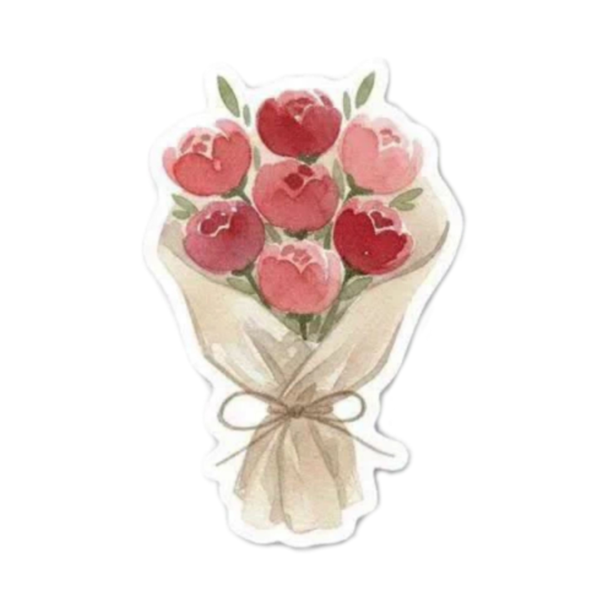
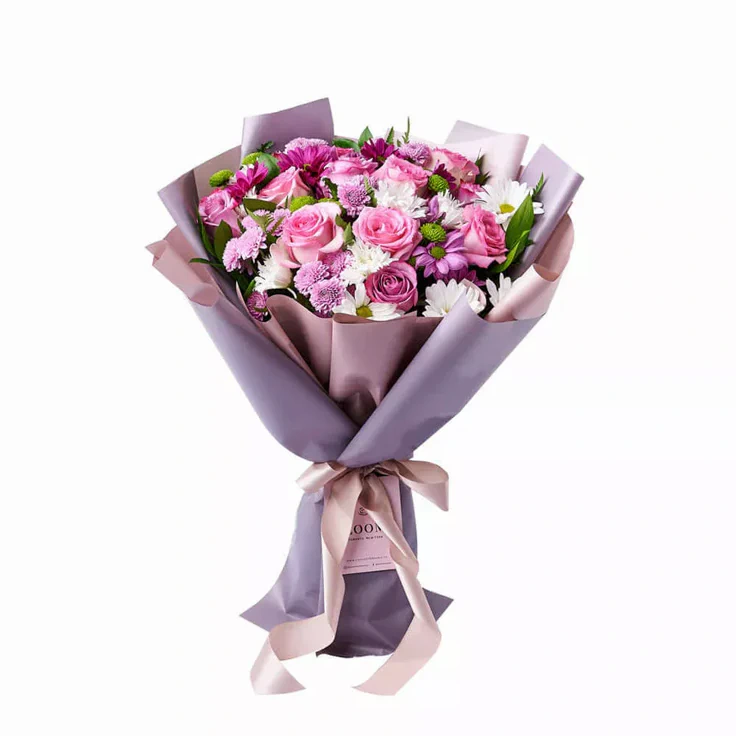

Click the card below.
Happy 23rd Birthday, baby. ❤️
I just want to say thank you po. Thank you for coming back into my life hehe mag ssorry lang dapat eh HAHAHAHA thank you for your time, your presence, your patience rin palagi kase I'm super kulit, and for every little effort you make that you probably don't even realize means so much to me. You've made a lot of ordinary days feel special, and I'm genuinely grateful for that po.
I'm really proud of you, baby. Proud of how hardworking you are and of the person you're continuously becoming. I hope you never stop believing in yourself, because I truly believe na kaya mo pong maabot lahat ng goals mo.
One thing I want us to always remember is that I don't want us to lose ourselves just because we found each other. I don't want us to focus only on us po. I want us to keep chasing our own dreams, keep growing, keep becoming better versions of ourselves, while knowing that we have someone cheering for us from the side. I want to be that person for you po.
I'll always support you, baby. Through your good days, your tiring days, your victories, and even the days when you feel like giving up. Diba sabi ko po? hindi ko po gusto na mafeel mong kailangan mong piliin between your goals and me, because I'll always want to see you grow. Seeing you become successful will always make me happy too, baby.
I know it's only been almost two months since we started talking again, and I know that isn't a very long time. Honestly, I don't see love as something that should always follow a certain timeline naman. The more I got to know you, the more I found myself genuinely caring about you po. But at the same time, I'm still trying to be mindful of my own feelings naman and I'm not letting myself rush into anything just because everything feels good. I still want to take things one day at a time, continue getting to know every side of you, and let what we have grow naturally.
But one thing I want you to never question is my intention po. From the very beginning, baby, it's always been genuine po. I'm here because I truly want to know you more, understand you better, support you always, and keep choosing you every day. I'm not looking for something temporary, and I'm definitely not here just because everything feels exciting right now. I'm here because I genuinely see you as someone worth choosing, worth waiting for, and worth growing with.
So today, don't think about anything else muna po. Just enjoy your birthday, smile as much as you can, eat lots of good food, and make beautiful memories. You deserve every bit of happiness today and every day after this.
Happy birthday again, baby. Thank you for being you. Thank you for letting me be part of your life.
And no matter where life takes us, I'll always be one of the people who's genuinely rooting for you. Always. Mwaaa ❤️
23 things I appreciate about you

If I could, I'd hand these flowers to you myself.
But for now, these will have to be virtual.
I'm already looking forward to the day I can spoil you with "just because" flowers, the kind that don't need a reason other than "I was thinking of you".
I hope this tiny website reminds you
how special you are to me, baby.
One last thing...
No matter how busy life gets,
I hope today reminds you
how loved you are.
Thank you for existing.
Happy 23rd Birthday,
baby. ❤️